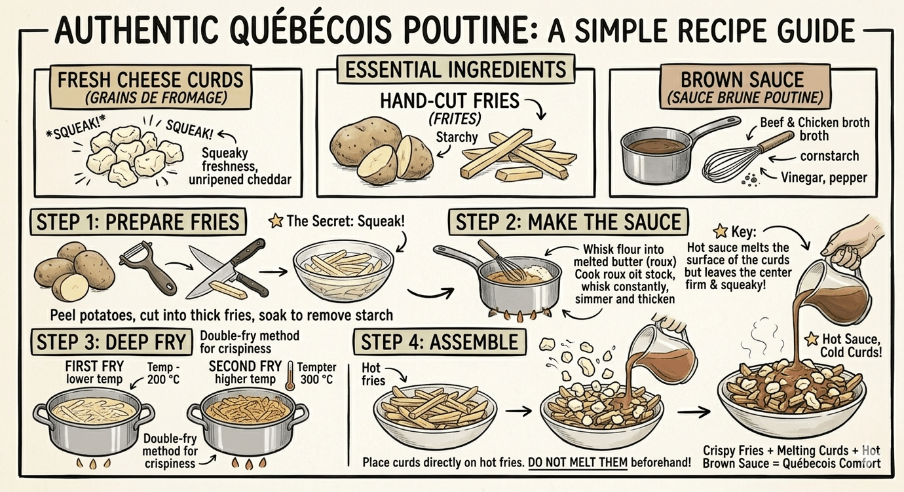
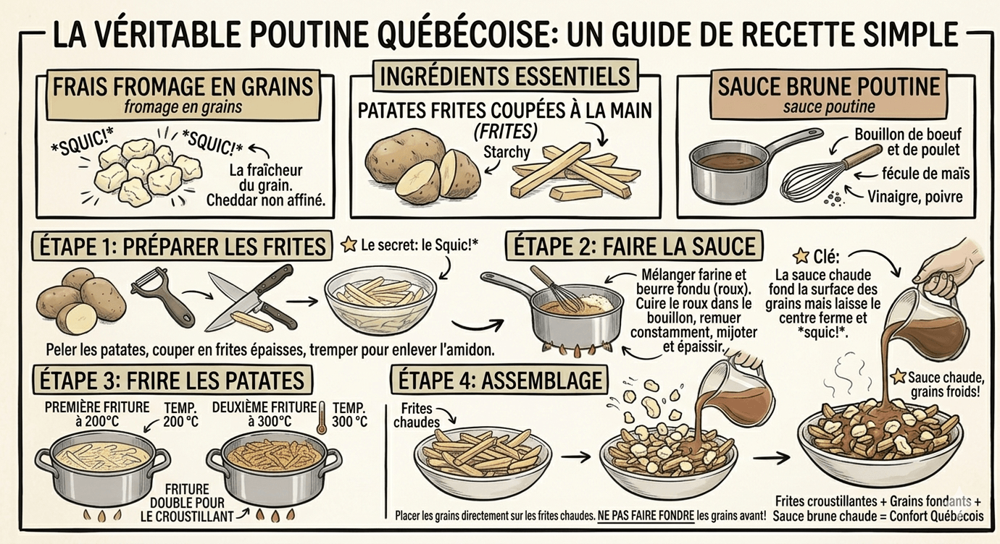

This may be one of the most dangerously Canadian opinions possible, but here we go: poutine is not really "Canada's national dish." It's Québec's dish. Canada just adopted it later because it's objectively delicious. And honestly, that distinction matters more than people realize.
The Rest of Canada Was Late to the Party
Today, poutine feels aggressively Canadian. Tourist ads mention it constantly. Every sports arena sells it. Fast food chains have versions of it. You can now get butter chicken poutine, pulled pork poutine, vegan poutine, lobster poutine, and "deconstructed" poutine made by someone charging $29 in a reclaimed-wood restaurant.
But for a surprisingly long time, poutine was viewed by many outside Québec as a regional oddity. Especially in English Canada.
If you go back a few decades, poutine was mostly associated with rural Québec snack bars, casse-croûtes, hockey arenas, truck stops, and greasy spoon diners. Not trendy restaurants. Not tourism campaigns. Not international "Canadian cuisine" lists. Certainly not luxury brunch menus with truffle oil involved.
Poutine's Origins Are Extremely Québecois
Poutine emerged in rural Québec sometime in the 1950s, though the exact origin story is still debated with near-religious intensity. Several small towns claim to have invented it.
The basic formula is beautifully simple: fries, cheese curds, gravy. That's it. No foam. No aioli drizzle. No artisanal narrative. Just carbohydrates and emotional support.
The key ingredient — and the part many non-Québec versions still get wrong — is the fresh cheese curd. Real Québec cheese curds have that famous squeak when you bite them. If the curds don't squeak, somewhere in Québec an elderly diner cook senses a disturbance in the universe.


English Canada Used To Kind of Mock It
This is the part people forget now. For years, poutine had a reputation outside Québec as messy, excessive, low-class comfort food. Which… to be fair… it absolutely is. But that wasn't considered a compliment at the time.
In parts of English Canada during the 1970s and 1980s, poutine was often treated as a novelty food rather than something representing Canadian identity. Meanwhile Québec was over there quietly perfecting it.
As often happens with regional foods, wider acceptance only came later once:
- 1. urban food culture embraced comfort food
- 2. chefs started reinventing it
- 3. people outside the region realized, "Wait… this is incredible."
This is basically the culinary version of discovering a local indie band after they become internationally famous.
Canada Eventually Claimed It Anyway
At some point in the 1990s and 2000s, the rest of Canada collectively decided: "You know what? We're taking this." And honestly, Québec probably saw this coming.
Poutine spread everywhere — national fast food chains, pubs, diners, ski resorts, university campuses, festivals, airport restaurants. Eventually it became internationally associated with Canada itself.
Today tourists arrive expecting maple syrup, hockey, and poutine. Possibly in that order.
The Problem With Calling It "Canadian"
Calling poutine simply "Canadian" flattens where it actually came from. It's a bit like calling gumbo "American" without acknowledging Louisiana, or calling deep-dish pizza simply "U.S. cuisine" without mentioning Chicago. Technically true? Sure. But incomplete.
Poutine emerged from a specific cultural and linguistic environment in Québec. Its history is tied to Québec diners, dairy traditions, and working-class food culture. That context matters. Especially because Québec has such a distinct identity within Canada already.
Ironically, one of the most internationally famous "Canadian" foods is actually one of the clearest examples of Québec cultural influence spreading outward.
Most Poutine Outside Québec Still Isn't Quite Right
This is another uncomfortable truth. A lot of poutine outside Québec is… fine. But not great.
The fries are often wrong. The gravy is too fancy or too salty. And many places use shredded cheese instead of curds, which is basically culinary tax fraud.
Real poutine is deceptively hard to do properly. The balance matters: crispy fries, hot gravy, fresh squeaky curds partially melting but not fully dissolving. There's a narrow window between "perfect poutine" and "wet potato disaster." Québec generally understands this better because it has decades more experience.
The Evolution of Canadian Identity
The funny thing is that poutine becoming "Canadian" actually says something interesting about Canada itself. Canadian identity is often built from regional things gradually becoming national symbols over time.
Maple syrup was once heavily tied to specific regions. Nanaimo bars came from British Columbia. Butter tarts have Ontario roots. Tourtière is deeply French Canadian. Canada tends to absorb local traditions into broader national culture slowly and somewhat awkwardly. Poutine may be the ultimate example of that process.
Final Thoughts
Poutine absolutely belongs in Canadian culture now. But it didn't start as "Canada's dish."
It started as Québec comfort food — humble, messy, regional, and deeply local. The rest of Canada adopted it later after finally realizing fries, gravy, and cheese curds together are one of humanity's greatest achievements.
Which, honestly, is understandable. Some things are just too good to stay regional forever.